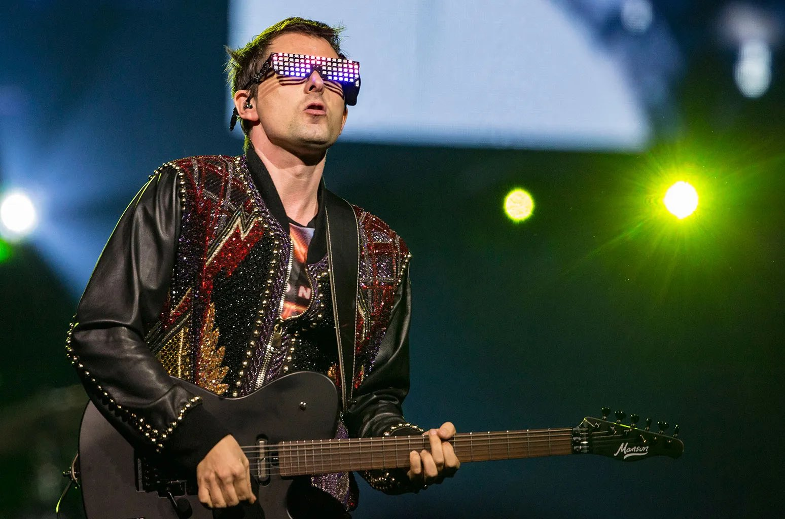
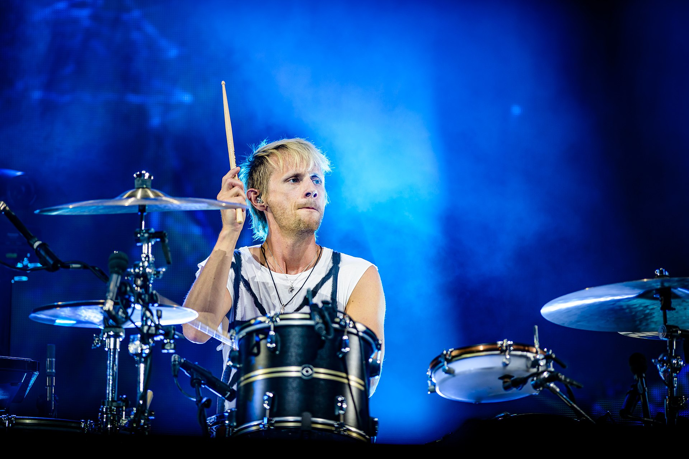

Meet the Members

Matthew Bellamy is the lead vocalist and guitarist for Muse. Known for his falsetto voice and dynamic guitar work, he is the band's primary songwriter.

Chris Wolstenholme is the bassist and backing vocalist. His bass lines are integral to the band's unique sound.

Dominic Howard is the drummer for Muse. His drumming style has contributed to the band's powerful sound.